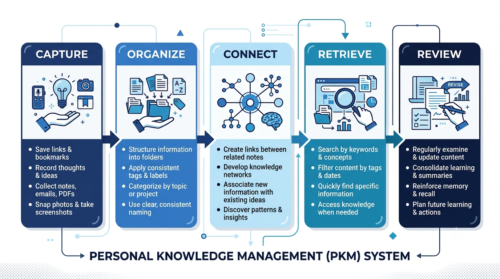
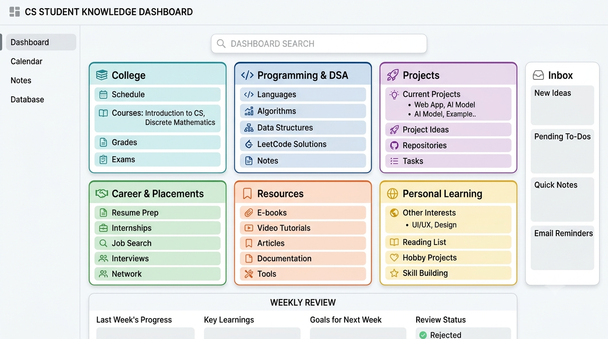
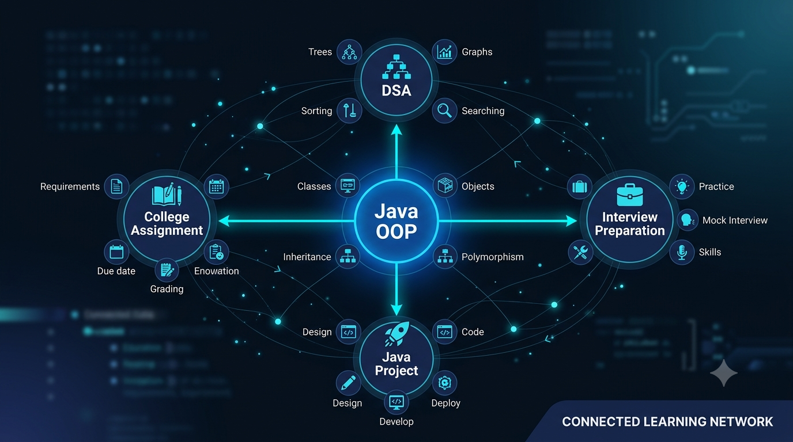

1. What Is a Digital Brain?
A Digital Brain is a personal system for collecting, organizing, connecting, and retrieving information that matters to you. It can hold lecture notes, programming explanations, useful links, project decisions, career resources, and your own reflections.
It is closely related to a Personal Knowledge Management System (PKM). The goal is not to copy your entire life into an app. The goal is to make useful information easier to find and apply later.
Think of the difference this way:
- Storage: You save a link about Java inheritance.
- Organized notes: You write a short explanation of inheritance and add examples.
- Connected knowledge: You link that note to your OOP class notes, a Java project that uses inheritance, and a question you got wrong while practising.
- Reusable knowledge: When you build a project or revise for an exam, you retrieve the explanation and apply it.
A Digital Brain is therefore not simply a large notebook or a collection of bookmarks. It is a system that helps you find, connect, understand, and reuse what you learn.
2. Why Traditional Note-Taking Often Fails
Taking notes is useful. The problem is what happens after the notes are created. Students often store information in several disconnected places: PDFs in downloads, class notes in folders, code snippets in text files, links in browser bookmarks, and reminders in messaging apps.
- Scattered storage: You remember saving something but not which app or folder contains it.
- Notes without context: A copied definition may not explain when or why the concept is useful.
- Repeated searching: You search the web again for an explanation you already found earlier.
- No connections: A concept learned in class is not linked to the project or coding problem where it becomes useful.
- No review: Notes accumulate but are rarely corrected, summarized, or used again.
The solution is not to write more notes. It is to create a small workflow that gives each useful item a place, enough context, and a route back to related information.
3. The Five Core Components of a Digital Brain
A practical knowledge management system can be built around five actions. They do not require five different apps; they are five stages in one simple process.
1. Capture — save useful information quickly
Capture is collecting something before you forget it: a lecture point, a question from a programming problem, a useful article, a project idea, or a task. Use one Inbox for quick captures. Add a short title and, when possible, one sentence explaining why the item may be useful. Do not stop to design its perfect category while you are in class or solving a problem.
2. Organize — give information a predictable home
Use a small number of broad areas such as College, Programming,
Projects, Career, Resources, and Personal Learning. Add subfolders
only when you have enough material to justify them. Folders provide
a stable location; tags or properties can describe an item across
multiple areas—for example, a note can be tagged Java,
OOP, and exam-revision.
3. Connect — show how ideas relate
Connections make a knowledge system more useful than a storage folder. Add links between related notes and explain the relationship in a few words. A Java inheritance note could link to your Object-Oriented Programming lecture, a DSA example where you used a class hierarchy, and a project where you extended a base class. You do not need to link every sentence. Connect notes when the relationship will help you understand or reuse the idea.
4. Retrieve — find the right note when you need it
A note is useful only if you can find it. Use descriptive titles,
consistent keywords, search, tags, and links. Prefer
Java - Method Overriding over
Important Notes 3. When you save a resource, record
what it is and why you saved it. Searching for “JDBC connection
example” is easier than trying to remember which bookmark contained
the example.
5. Review — keep the system accurate and useful
Review turns stored information into maintained knowledge. Once or twice a week, process the Inbox, correct incomplete notes, add important links, and remove duplicates. Before an exam or project milestone, revisit relevant notes and add what you learned from applying them. The aim is not to review every note every day; review material relevant to your current learning.

4. Best Tools to Build Your Digital Brain
You do not need a complicated stack. Choose one primary tool that fits how you think and work. These options solve slightly different problems, so there is no universal winner.
| Tool | Best suited for | Strengths | Limitations to consider |
|---|---|---|---|
| Notion | Structured notes, databases, dashboards, and project tracking | Flexible pages, databases, templates, and linked views | Can tempt beginners to over-customize; Free plan has per-file upload limits |
| Obsidian | Long-term personal notes and linking ideas | Local Markdown files, backlinks, graph view, community plugins | Requires more setup decisions; built-in Sync and Publish are paid add-ons |
| Google Keep | Fast capture, checklists, and reminders | Quick notes, labels, colors, pins, search, reminders | Less suitable as the only home for a large, deeply connected knowledge base |
| OneNote | Lecture notes, handwritten notes, and notebooks | Notebook/section/page structure, freeform pages, cross-device access | Cross-linking and structured knowledge workflows can feel less lightweight |
Notion: for structured workspaces
Notion combines pages with databases. It can hold a subject dashboard, project tracker, resource database, and notes in one workspace. Its Free plan is listed at $0 for individual use, with a 5 MB per-file upload limit. Eligible students and educators may qualify for a free one-member Plus plan through its education offer, subject to eligibility. Check the official pricing page for current details.
Choose Notion if: you like visual organization, tables, properties, and dashboards. Keep the first workspace small rather than building a complex productivity operating system.
Obsidian: for connected personal notes
Obsidian stores notes as local Markdown files in a folder called a vault. You can link notes, use backlinks, and explore connections with its graph view. The core app is free and does not require an account. Obsidian Sync and Publish are optional paid services, so syncing across devices may require another approach or a subscription. See its official pricing information.
Choose Obsidian if: you prefer local files, plain-text notes, and linking concepts. It can suit programming notes and long-term personal knowledge, but avoid installing many plugins at the beginning.
Google Keep: for quick capture
Google Keep is useful for short notes, lists, reminders, and quick captures from a phone or browser. You can label, color, pin, archive, and search notes. It is simple to start with, but a large collection of detailed subject notes can become harder to structure than in a notebook-oriented or linked-note tool. See the Google Keep help guide.
Choose Keep if: your main problem is forgetting ideas, links, or small tasks. You can use it as a temporary capture inbox and move notes into a primary knowledge tool during weekly review.
Microsoft OneNote: for class and lecture notebooks
Microsoft OneNote organizes material into notebooks, sections, and pages. It suits students who collect lecture notes, screenshots, diagrams, typed explanations, and handwritten annotations. Microsoft describes OneNote as free to download and use, with some premium features available through eligible Microsoft 365 subscriptions. Notebook sync depends on the account and storage setup. See OneNote support.
Choose OneNote if: you prefer a digital notebook that feels close to a traditional class notebook, especially for mixed typed and handwritten notes.
Should you use more than one tool?
It can work, but define each tool's job. For example, Keep can be a temporary capture inbox while Obsidian holds processed notes. Avoid maintaining the same full note in three apps. Duplicated systems create extra work and make it unclear which copy is current.
Simple recommendation: select one primary tool and use it consistently for 30 days. If unsure, start with the tool you already have access to and can use comfortably.
5. Build Your Digital Brain in 30–60 Minutes
You can create a useful first version in one short setup session. This is a starter structure, not a perfect system. Improve it as real information accumulates.
Step 1: Choose one primary tool — 5 minutes
Pick Notion, Obsidian, OneNote, or another tool you already use. If you want fast capture above everything else, Keep can be enough to begin. Do not spend the whole session comparing apps.
Step 2: Create six broad categories — 10 minutes
Create top-level areas for College, Programming & DSA, Projects, Career & Placements, Resources, and Personal Learning. Avoid creating a separate folder for every subject or topic on day one.
Step 3: Set up one Inbox — 5 minutes
Create a page or folder called Inbox. When you find a
useful link, receive an assignment, think of a project idea, or hear
an important explanation, capture it there. Add a context line such
as “Useful example for JDBC connection handling.”
Step 4: Add a few real notes — 10–15 minutes
Do not migrate your entire digital history. Add only a few items you are actively using: one current subject note, one Java concept, one DSA problem insight, one project note, and one career resource. A system becomes useful by supporting current work, not by importing everything.
Step 5: Connect related notes — 5–10 minutes
Add links between notes that genuinely depend on each other. A Java OOP note might link to your college assignment, a Java project, and an interview-preparation note. Add a sentence explaining why the link matters.
Step 6: Create one reusable note template — 5 minutes
Use a simple template for concepts rather than designing a different template for every subject.
# Topic or concept
## Simple explanation
Explain it in your own words.
## Example
Add a small example or diagram.
## Where I used it
Link an assignment, coding problem, or project.
## Related notes
- [[Related concept]]
## Questions to revisit
- What is still unclear?Step 7: Schedule a short weekly review — 2 minutes
Choose a realistic time, such as 15 minutes on Sunday. Sort useful Inbox items, update important notes, and delete captures that no longer matter.
At the end of the session, you should have a primary tool, six broad categories, an Inbox, a handful of useful notes, a few meaningful links, and a review reminder. You do not need a custom dashboard, automation, or dozens of plugins.
6. A Practical Digital Brain Structure for Students

Use this example as a starting point. The names can be folders, pages, notebooks, or top-level categories depending on your tool.
My Digital Brain/
│
├── 00 - Inbox/
│ ├── Quick Notes/
│ ├── Links to Process/
│ └── Ideas to Review/
│
├── 01 - College/
│ ├── Current Semester/
│ │ ├── Subject A/
│ │ ├── Subject B/
│ │ └── Assignments/
│ ├── Previous Semesters/
│ └── Exam Revision/
│
├── 02 - Programming and DSA/
│ ├── Java/
│ ├── Python/
│ ├── Data Structures/
│ ├── Algorithms/
│ ├── SQL and DBMS/
│ └── Debugging Notes/
│
├── 03 - Projects/
│ ├── Project Ideas/
│ ├── Active Projects/
│ ├── Technical Decisions/
│ └── Completed Projects/
│
├── 04 - Career and Placements/
│ ├── Resume/
│ ├── Interview Preparation/
│ ├── Internships/
│ ├── Company Research/
│ └── Application Notes/
│
├── 05 - Resources/
│ ├── Websites and Tools/
│ ├── Courses and Tutorials/
│ ├── Documentation/
│ └── Books and Articles/
│
└── 06 - Personal Learning/
├── Learning Goals/
├── Book Notes/
├── Reflections/
└── Weekly Reviews/
Keep the structure shallow. Create a separate Java subtopic only
when you have enough notes to make it useful. If your tool supports
tags, start with a small set such as #concept,
#assignment, #project,
#resource, and #to-review.
Do not store every large PDF inside the knowledge tool if it is better kept in a dedicated cloud or local folder. A note can link to the original file and explain what it contains. This keeps the knowledge system navigable without forcing it to become your entire file-storage system.
7. Example: How a CSE Student Can Use a Digital Brain

Imagine you are learning Java in college, practising DSA, completing assignments, and preparing for internships. Here is how information can move through the system.
Example A: Learning Java OOP
- During a lecture, capture “Understand method overriding with a simple example” in the Inbox.
-
After class, create a note called
Java - Method Overridingunder Programming and DSA. - Write the explanation in your own words and add a small code example that you have tested.
- Link it to your College OOP notes and a Java project where a subclass overrides a method.
- Add an interview question or a point you initially misunderstood.
Example B: Connecting DSA practice to concepts
Suppose you solve a problem using a HashMap. Instead of saving only the solution, create a short insight note: why a map was suitable, what the key represents, what lookup behaviour matters for the problem, and what edge cases you tested. Link the note to your Java Collections page and the original problem.
Example C: Managing a college mini project
Create a project home page with the objective, scope, team responsibilities, milestones, repository link, meeting notes, and technical decisions. Link the project to the Java, database, or software engineering concepts it uses. When a bug teaches you something reusable, save the lesson in the relevant programming note and link back to the project.
Example D: Preparing for internships
Keep a Career page with resume versions, target role requirements, interview topics, application notes, and practice reflections. When an interview question exposes a weak topic, link it to the concept note and add a task to practise it. Avoid storing sensitive account credentials or private recruiter information in a general notes workspace.
The value appears in the links between these areas. A single Java concept can support a college assignment, a project implementation, DSA practice, and an interview answer. You learn it, document it clearly, and reuse it in different situations.
8. Common Mistakes to Avoid
- Building a complex dashboard before taking notes: start with categories, an Inbox, and a few real notes. Customize only when a repeated problem appears.
- Collecting without processing: a large Inbox becomes another messy downloads folder. Review it regularly and discard low-value captures.
- Copying information without understanding it: add your own explanation, an example, and a note about when the information is useful.
- Creating too many folders and tags: excessive categorization slows capture. Start broad and add structure only when retrieval becomes difficult.
- Linking everything: links should explain meaningful relationships, not create a web of unrelated references.
- Using multiple primary apps: duplicated notes create uncertainty about which version is current. Give each app a clearly defined role or keep one primary home.
- Trying to migrate everything: move active and valuable information first. Old files can remain where they are until you need them.
- Ignoring backups and privacy: understand where your notes are stored, keep a backup, and avoid putting passwords, authentication codes, API keys, or confidential personal data in ordinary notes.
9. Maintain Your Digital Brain Without Wasting Time
A knowledge system should reduce repeated work, not become another subject you have to manage. Keep maintenance small and attach it to routines you already follow.
A simple weekly review
- Process the Inbox: move useful captures to the right area, turn actions into tasks, and delete irrelevant items.
- Update notes used during the week: correct mistakes and add the example or result you learned from.
- Make a few meaningful connections: link a concept to an assignment, project, or problem where you applied it.
- Choose what to revisit next week: select only the notes relevant to your current subjects and goals.
Use search before rebuilding a note
When a question comes up, search your Digital Brain before starting a new web search. If you find a note, check whether it is still accurate and improve it after use. If you do not find one, create a concise note after you have learned the answer.
Backups and privacy
Keep a periodic backup of important notes and attachments. If you use a local-file tool such as Obsidian, back up the vault folder to a separate drive or trusted cloud location. If you use a cloud service, check its export and recovery options rather than assuming sync is the same as backup. Test that you can open a backup occasionally.
Use a device lock and strong account security. Do not store passwords, recovery codes, API keys, private identity documents, or confidential information in ordinary study notes. Before uploading lecture material, project files, or other people's information to a cloud or AI service, consider permissions, institutional rules, and provider privacy settings.
How much time should it take?
Capture should take seconds. Processing can happen during a short weekly review. If maintaining the system takes longer than studying, coding, or building projects, simplify it. The system exists to support your learning—not to replace it.
10. Frequently Asked Questions
What is a Digital Brain for Students?
It is a personal knowledge management system that helps students collect, organize, connect, retrieve, and review useful information such as class notes, programming concepts, resources, project knowledge, and career preparation material.
Which is the best note-taking app for students?
There is no single best app for everyone. Notion suits structured pages and databases, Obsidian suits local linked notes, Google Keep suits quick captures and reminders, and OneNote suits notebook-style lecture material. Choose based on your workflow and verify current plan limits before committing.
Can I build a Digital Brain for free?
Yes. You can start with free versions of tools such as Obsidian, Google Keep, OneNote, or Notion's individual Free plan. Some optional services, storage limits, collaboration features, and advanced capabilities may be paid. Check each provider's current plan details.
Should I use folders or tags?
Use a few broad folders or categories to give notes a predictable home. Use tags when a note belongs to more than one topic or needs a simple status such as “to review.” You do not need a complicated tagging system.
How do I organize study notes effectively?
Group notes by current subject or learning area, give each note a descriptive title, explain concepts in your own words, and link related examples, assignments, and resources. Keep an Inbox for quick captures and review it weekly.
Is a Digital Brain the same as a task manager?
No. A task manager focuses on actions and deadlines. A Digital Brain focuses on knowledge and reference information. You can link a note to a task, but do not turn every piece of information into a task.
How long does it take to build one?
You can create a basic structure in about 30–60 minutes. It becomes more useful gradually as you add and connect notes during normal study and project work. You do not need to migrate everything at once.
Can I use AI inside my Digital Brain?
AI can help summarize material, generate questions, or clarify an explanation, but verify important facts against trusted sources and your course material. Keep your own understanding and notes at the centre, and do not upload private or restricted material without checking the relevant rules and privacy settings.
11. Final Thoughts
Your Digital Brain does not need to be beautiful, complicated, or filled with hundreds of notes. It needs to be dependable. Capture useful information when it appears, organize it so you can find it, connect ideas when the relationship matters, and review what you actually use.
Start with one tool, six broad categories, one Inbox, and a short weekly review. Add features only when a real problem gives you a reason to add them.
The goal is not to store everything. It is to make what you learn easier to understand, find, connect, and use again.
For useful AI-assisted research and learning resources, see 10 Best Free AI Websites Every Student Should Know. For a broader learning workflow, continue with The Perfect AI Study System. If you are building technical skills alongside your notes, explore the Complete Computer Science Roadmap and our practical guides to GitHub projects and Java projects.